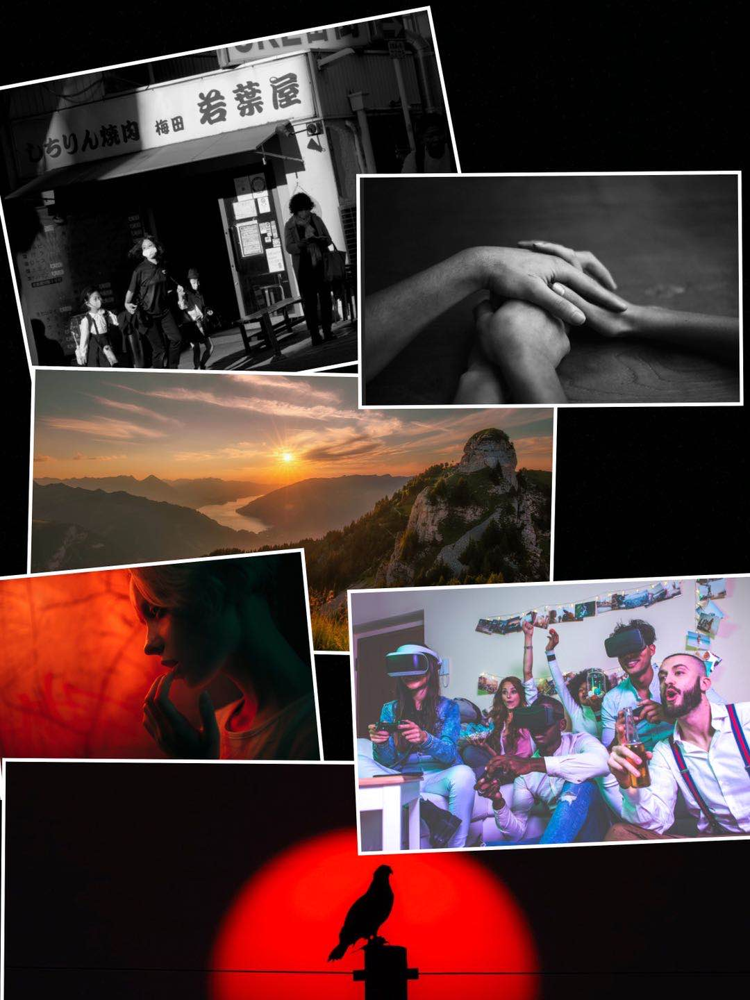
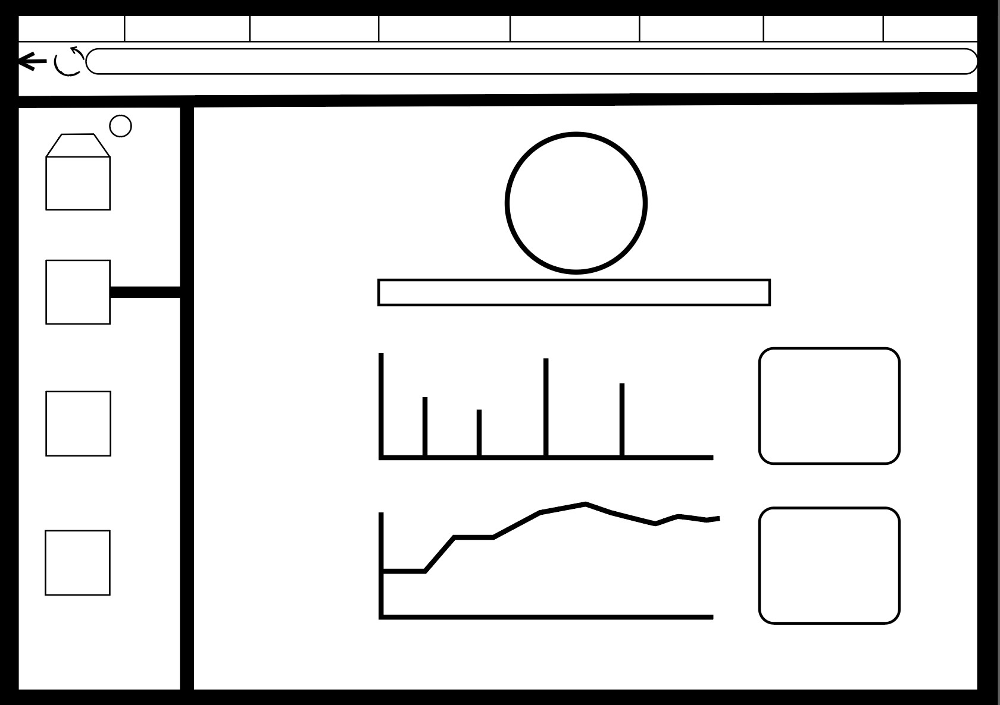

Background
Former research shows that all of our interviewees were interested in video games, and in the recent research on the amount of people wearing glasses showed that the number of people wearing glasses are growing and the total number of pupils wearing glasses has approached 75% approximatetly so far("Research report with glasses", 2020). Besides, among the 200 people who participated in the survey, 68% of the participants believed that playing games for a long time and staring at the electronic screen is very likely to cause myopia or deepen myopia. Therefore, the designed web is aimed to find a balance between real like and video games for those who were addicted and also provide a platform for them to make more friends.
Research
Among young people ’s perception of game addiction, the vast majority (about 80%) of participants believe that people in the age group of 13-25 are more likely to be addicted to games than others, while 10% Think children under 13 are more addicted to games，and according to the book CyberPsychology & Behaviour, game addiction is related to the levels of social skills and academic performance, which are all the things that a teenager would need to face throughout his(her) school life(Shao,2004,p.4) .Therefore, combined with the our research we can found that teenagers and even younger kids are more likely to get addicted to video games.
User Profiles
The target users of the webiste will be people who were addicted in video games and can get themself rid of it or those who are willing to enjoy real life more and eager to meet more friends.
User Needs
In order to achieve our goal which is to cut down the time consumed in game playing, we can provide our user a platform to make new friends, restricted their time spent on video games and also show them how much money they have spent on the game monthly, which are aimed to raise their awareness.
Requirement
We hope that our users can be aware of their addiction in video games, which is of significance in order to alow our website has a better effect on our users.Our web enables users to enjoy themselves more in thier real life.
Ideation
Mood Boards
Sketches
Landing page
The first landing page was designed as a heart that is made up with two shaking hands and a olive branch, meaning that we can fight against game addiction along side with each other, and in order to make it easier for our users to login, our website can be connected with diverse social account.
The second landing page was a scene that someone is playing on the grass, which is exactly what our users may want. With this scene as a landing page, our users can easily acknowledge what is the goal of our web.
The last landing page was designed to show our users that we can find ourselves enjoyable not only in vedio games nut also in real life.
Web content
Designs
Wireframes

The wireframe showed each part of the designed web, clarify its functionality. It shows how each part of the webiste works, homepage is to conclude users' recent gaming, and then we can look into each part more detaily by clicking into the part our users want to learn more, we show the data we gathered to our users by showing them graghs, which is more clear for users to look into, and we also set up a chatting room for those who keens to meet new friends.
Mockups